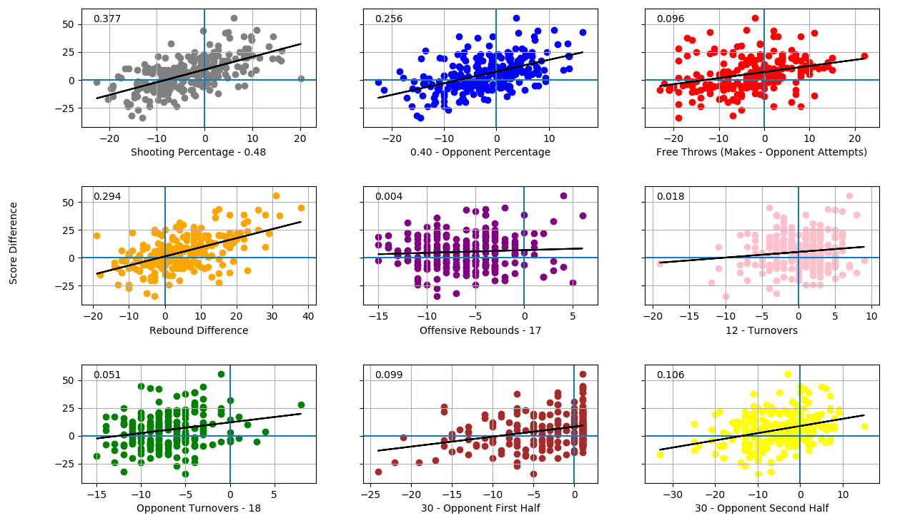
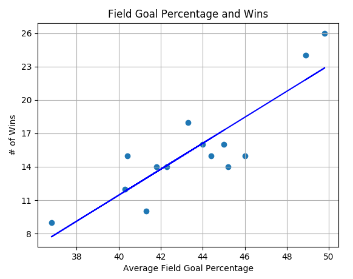

As a basketball alumnus of Pomona-Pitzer, I had the great honor of playing for the legendary, 500+ win Coach Charles “Coach Kat” Katsiaficas. He has been the head coach at Pomona-Pitzer since 1988, leading the program to 27 winning seasons, 12 conference championships and a program first Sweet 16 berth this season. During my first year, I remember him telling the team about his goals for each game. He explained that they have stayed mainly the same over the years, however they had to be adjusted when the 3-point line was added. That was when I realized these goals have stood the test of time, so now we will see if they pass some different tests. Although the main objective was always to play “forty minutes of nails”, we will be looking to see which of the goals were the most important to winning.
The Goals
- Shoot better than 48% from the field
- Hold the opponent under 40% from the field
- Make more free throws than the opponent shoots
- Outrebound the opponent
- 17 or more offensive rebounds
- Under 12 turnovers
- Force 18 or more turnovers
- Hold opponent under 30 pts (First Half)
- Hold opponent under 30 pts (Second Half)
The target is to complete 6 or more goals per game, but any time we get more than 4 or 5 we felt it was a decent showing. There is the ongoing debate among Pomona-Pitzer basketball players about whether it is even possible to get all nine goals in one game, thinking about how by grabbing 17 offensive boards each would almost have to be a put-back to maintain a field goal percentage above 48%. Coach Kat used these exact goals all four years during my tenure and it is now time to take a closer look.
The Quick Analysis
Looking at the past nine seasons there were 241 games, with a record of 150-91. Below we see the number of games each goal was achieved and how many of these games were won. This data, scraped from the Sagehens website, includes this year’s season, huge shoutout to those guys reaching the Sweet 16 for the first time in program history.
| Goals | Games | Wins | Win Percentage (%) |
|---|---|---|---|
| Shooting Percentage | 83 | 75 | 90.4 |
| Opponent Shooting Percentage | 100 | 84 | 84.0 |
| Free Throws | 87 | 74 | 85.1 |
| Rebound Margin | 158 | 117 | 74.1 |
| Offensive Rebounds | 14 | 8 | 57.2 |
| Turnovers | 120 | 79 | 65.8 |
| Force Turnovers | 12 | 7 | 58.3 |
| First Half Points | 102 | 74 | 72.5 |
| Second Half Points | 55 | 43 | 78.2 |
It seems the two goals around shooting percentage are very highly correlated to winning. If you are able to make your shots or keep your opponent from making theirs, you are doing something right. Specifically looking at Shooting Percentage, I will argue that it is a causal relationship. Of the 83 times the goal was achieved, 75 resulted in a win, meanwhile there were 75 other games that resulted in a win where the goal was not achieved. Thus winning is not determined only by the Shooting Percentage goal, but when that goal is achieved it leads to winning.
On the other hand, we can see two goals (Forcing Turnovers and Offensive Rebounding) that were hardly achieved, causing difficulty in drawing conclusions. If we change the turnover goal to be “cause 15 or more” and go through the data again we get better results. Now, we have 35 total games, where 27 were wins for a win percentage of 77.1. This shows much more correlation and means that the goal should probably be updated, and maybe also means teams recent Sagehen teams aren’t causing turnovers like they used to. Offensive Rebounds is trickier as changing the goal value did not converge to a better correlation. This could be due to the importance of shooting percentage and the fact that the only way to get an offensive rebound is first to miss.
The Fun Facts
- The team is 0-10 when achieving 0 goals.
- The team is 84-8 when achieving 4 or more goals, 28-1 with five or more and 8-0 with 6 or more.
- The largest number of goals completed for a single game within the dataset was 7. This was only achieved once in a 96-54 win over Emerson in 2016-17 season.
- After further research a 92-33 win over Cal Tech in the 2007-08 season was found where the team completed 8 goals. The only goal missed was Free Throws as the team shot 4/11 from the line while Cal Tech shot 3/7. However, this does prove that it is possible to achieve all nine!
- These goals consider the same components as Dean Oliver’s Four Factors, which are now widely used across the NBA and basketball analytics. Shoutout to Coach for being ahead of his time analytically!
The Model
We begin by splitting the data into training (180 games) and testing (71 games) sets, then creating a Multiple Linear Regression model to see if the goals could be used to predict wins.
The input for each goal was the difference between the boxscore stat and the target set by the goal. For example, if the team shot 50% then the input would be (50-48) = 2. Here a positive number indicated the goal was achieved or a win for the output. The values were then scaled so that we would be able to compare the coefficients. The model (R^2 = 0.88) was able to correctly predict the outcome of 64 games (of the 71 total) with the following coefficients.
| Goals | Coefficient |
|---|---|
| Shooting Percentage | 7.03 |
| Opponent Shooting Percentage | 5.83 |
| Free Throws | 1.47 |
| Rebound Margin | 5.92 |
| Offensive Rebound | 0.69 |
| Turnovers | 5.02 |
| Force Turnovers | 4.74 |
| First Half Points | 1.03 |
| Second Half Points | 0.96 |
We see Shooting Percentage is far and away the most important goal. Surprisingly, the turnover goals seem to be important as well, for Forcing Turnovers this could very well be because of the small sample size, so we will not continue to look at it. This is only surprising because of the rather insignificant correlation seen above, but definitely makes the basketball player in me feel better. Limiting turnovers is constantly harped on by coaches (Coach Kat included, as would be demonstrated by him punting the ball high into the air “because then at least there is a chance it goes in”) and due to their impact in the number of possessions are an integral part of the game. It is good to see that turnovers show their importance here. Looking at the top four goals, if they were all achieved the team is 11-0 and if at least three of them were achieved then the team is 62-2, meaning each one definitely plays a part in winning.
The Graphs
Below we can see each goal graphed separately. Each x-axis represents the goal difference, same as the input to the model above, and the y-axis represents the point differential for the game. Each graph has also been fitted with a regression line (some better than others) and its corresponding R^2 in the top left corner.
Graphically it is easier to see how some goals do not seem to have much of a bearing on winning. Although important for the model, now it is a bummer to see how reducing turnovers does not seem to be a difference maker in wins or losses. We can also see why the shift discussed above to change Force Turnovers to 15 resulted in a much better correlation and why there was no such convergence for Offensive Rebounds (that graph looks randomized!). It is also interesting to note how the two goals actually associated with points have not been a large factor throughout. As we can see in the graphs, there seems to be a larger correlation for these two goals towards the extremes. But, teams are going to make shots and in the majority of cases scoring is around the 30 point mark per half so not a huge difference can be seen between wins and losses. This seems to be an argument for quality over quantity, since percentages are so important, and against teams who play fast and try to maximize the number of shots. Again, in the end the shooting percentage goals and rebounding margin seem to carry much more weight than the others.
The Meaning
The most important goals throughout this analysis have been Shooting Percentage, Opponent Shooting Percentage and Rebound Margin. The team is 27-0 when achieving all three of these goals. By achieving at least two, the team is 107-10, and by getting at least one of these three we can cover almost all of the wins as the team is 142-55. There were only eight wins in the past nine seasons where none of these three goals were achieved.
These three goals are also fairly interconnected as the only way to get a rebound is to first miss a shot. By shooting a high percentage you limit the number of defensive rebounds available to the other team, the opposite is true by holding the opponent to a lower percentage, thus increasing the chances for a larger rebound margin. You could argue then that Rebound Margin is an effect of the shooting percentage goals. So, if we just look at the shooting percentage goals we see by achieving both the team is 34-1 and 125-23 when achieving at least one of them. This has historic significance as well in terms of past Sagehen teams. The only two teams in the past 14 seasons to have a season average above 48% are this year’s Sweet 16 team and last year’s team, who recorded the winningest season ever in program history. This is also a common trend over the past 14 seasons as we can see in the graph below, fitted with a Linear Regression line (R^2 = 0.75).
That field goal percentage is most important to winning is certainly not an unexpected result. What is more interesting is that stats like turnovers and offensive rebounds, stats that are so often lauded by coaches, are relatively unimportant. I hope these findings give Coach Kat more firm ground to stand on for some goals and possibly raise some questions for the others. And now now someone has something to say when he asks the perpetual question, “anything from anyone, about anything?”
The Extra Info
If we do not scale the independent variables before putting them into our model then the coefficients we are left with determine the additional difference in points for one additional unit of that goal.
| Goals | Coefficient |
|---|---|
| Shooting Percentage | 0.88 |
| Opponent Shooting Percentage | 0.81 |
| Free Throws | 0.18 |
| Rebound Margin | 0.60 |
| Offensive Rebound | 0.17 |
| Turnovers | 1.32 |
| Force Turnovers | 1.33 |
| First Half Points | 0.21 |
| Second Half Points | 0.13 |
We can see that every turnover under the target of 12 is the most rewarding in the final score, while grabbing 18, 19, 20, 21, 22, 23, 24, 25, 26, 27 or 28 offensive rebounds does not help much.
Published March 13, 2020